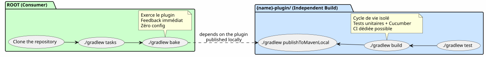

L'Architecture « Plugin Indépendant + Racine Consommateur » : Pourquoi mes Builds Gradle Se Dédoublent
Published on 14 May 2026
- 1. Le Problème : Trois Architectures Qui M’ont Fait Perdre du Temps
- 2. La Solution : Deux Builds Indépendants, Une Racine Consommateur
- 3. Pourquoi Cette Architecture M’a Conquis
- 4. L’Anatomie du Sous-Dossier
{name}-plugin/ - 5. Ce Qu’On Ne Fait Pas
- 6. Comparaison : Les Trois Architectures Face au Dogfooding
- 7. Le Contrat DAG : Un Build Racin N’Importe Jamais Depuis un Sous-Dossier
- 8. Conclusion : La Duplication Apparente Qui Fait Gagner du Temps
- 9. Références
Vous clonez un dépôt de plugin Gradle. Vous ouvrez un terminal. Qu’est-ce que vous tapez
ensuite ? ./gradlew tasks, bien sûr. Mais dans quel dossier ? La racine ? Le sous-module ?
Faut-il d’abord lire un README pour savoir comment builder ? Si vous hésitez ne serait-ce
qu’une seconde, l’architecture du projet est cassée.
Voici comment j’ai résolu ce problème une fois pour toutes — et pourquoi ce
pattern est aujourd’hui la signature de tous mes plugins Gradle dans foundry/public/.
1. Le Problème : Trois Architectures Qui M’ont Fait Perdre du Temps
Avant de converger vers le pattern actuel, j’ai tâtonné entre trois approches classiques pour organiser un plugin Gradle. Chacune avait un défaut rédhibitoire.
1.1. Option 1 : Le Plugin Isolé (pas de dogfooding)
Le projet ne contient que le plugin. Pas d’exemple de consommation. Pas de
projet qui l’exerce. Pour le tester, il faut créer un projet externe, y
référencer le plugin via mavenLocal ou un composite build, et seulement
là vérifier qu’il marche.
$ git clone mon-plugin
$ cd mon-plugin
$ ./gradlew build # le plugin compile
$ # ... et maintenant ? comment je l'essaie ?|
Un plugin Gradle sans exemple de consommation, c’est une bibliothèque sans tests d’intégration. Vous ne savez jamais si la dernière modification a cassé l’expérience utilisateur. |
1.2. Option 2 : Le Monorepo Classique (include(":plugin"))
Gradle init génère settings.gradle.kts avec include("plugin").
Le root et le sous-module partagent le même daemon, les mêmes configurations,
les mêmes catalogues. Pratique, mais couplé.
.
├── settings.gradle.kts → include("plugin")
├── build.gradle.kts → plugins { id("mon-plugin") }
├── plugin/
│ └── build.gradle.kts → java-gradle-plugin
└── gradle/
└── libs.versions.tomlCe qui coince :
* Le root doit avoir la même version de Gradle que le sous-module.
* libs.versions.toml est partagé — version catalogs communs, dépendances
qui fuient d’un module à l’autre.
* Impossible de builder le plugin indépendamment du root.
* La CI doit builder les deux modules, même si seul le plugin a changé.
1.3. Option 3 : Le Composite Build (includeBuild())
On sépare les deux en builds Gradle distincts et on les relie via
includeBuild("mon-plugin") dans settings.gradle.kts.
C’est déjà mieux. Le build du plugin est isolé. Mais le consommateur
doit explicitement référencer le build externe — et la sortie de
./gradlew tasks à la racine dépend de la bonne configuration du
composite. Le clonage n’est pas zero-config : il faut savoir que le
plugin est dans un dossier à part, que le root le référence, etc.
.
├── settings.gradle.kts → includeBuild("plugin-build/")
├── build.gradle.kts → plugins { id("mon-plugin") }
└── plugin-build/
├── settings.gradle.kts
└── build.gradle.ktsJe cherchais mieux. Beaucoup mieux.
2. La Solution : Deux Builds Indépendants, Une Racine Consommateur
Voici le pattern que j’ai fini par adopter :
.
├── settings.gradle.kts ← racine consommateur
├── build.gradle.kts ← 3 lignes : apply plugin + dogfood
├── gradle/
│ └── libs.versions.toml ← catalogue du consommateur
├── {name}-plugin/ ← BUILD INDÉPENDANT
│ ├── gradlew ← son propre wrapper
│ ├── settings.gradle.kts ← rootProject.name = "{name}-plugin"
│ ├── build.gradle.kts ← java-gradle-plugin, signing, publish
│ ├── gradle/
│ │ ├── libs.versions.toml ← catalogue du plugin
│ │ └── wrapper/
│ ├── src/ ← sources du plugin
│ ├── .agents/ ← gouvernance agent
│ └── *.adoc ← AGENT, PROMPT_REPRISE, snapshot, etc.
└── site.yml / slides-context.yml / ... ← configs dogfood|
La clé : |
Le root, lui, ne fait qu'une chose : appliquer le plugin.
plugins {
alias(libs.plugins.bakery)
}
repositories {
mavenLocal()
mavenCentral()
}
bakery { configPath = file("site.yml").absolutePath }Trois lignes dans le cas de bakery-gradle. Rien de plus.
Zéro include(), zéro includeBuild(), zéro sous-projet.
Un build Gradle classique qui applique un plugin comme n’importe
quel consommateur le ferait.
2.1. Le Flux de Travail

2.2. Le Workflow Concret
# 1. Builder le plugin
$ cd codebase-plugin
$ ./gradlew publishToMavenLocal
# 2. L'exercer depuis la racine
$ cd ..
$ ./gradlew indexCodebase queryCodebase snapshot
# La boucle est fermée. Le plugin est testé dans des conditions
# réelles de consommation, par le projet même qui l'héberge.3. Pourquoi Cette Architecture M’a Conquis
Trois bénéfices qui, combinés, valent le coût de la « duplication » :
3.1. 1. Dogfooding Natif, Feedback Instantané
Le meilleur test d’un plugin Gradle, c’est de l’utiliser.
Pas un test unitaire mocké. Pas un GradleRunner avec un projet
de test. Un vrai build qui applique le plugin sur de vrais fichiers.
$ git clone bakery-gradle
$ cd bakery-gradle
$ ./gradlew bake # ← le plugin est exercé immédiatementSi le plugin est cassé, le build racine le dit. Pas besoin d’aller chercher un projet de test externe. Le dogfooding est la première tâche que lance un nouveau contributeur. C’est le smoke test définitif.
|
La règle est simple : si la racine compile et que |
3.2. 2. Clonage Zero-Config
Un git clone && ./gradlew tasks et le nouveau venu voit tout
marcher sans rien configurer. Le build.gradle.kts racine est
la documentation vivante d’usage du plugin. Le site.yml à côté
montre la configuration attendue.
Comparez avec l’alternative : un README de trois paragraphes qui explique comment builder le plugin ET comment builder le projet de test. Un nouveau contributeur lit le README en diagonale, se trompe, ouvre une issue — alors que l’information pourrait être exécutable.
|
La documentation la plus robuste n’est pas celle qu’on lit. C’est celle qu’on exécute. Le build racine est la documentation exécutable du plugin. |
3.3. 3. Builds Isolés, CI Indépendants
Le plugin a son propre wrapper Gradle, son propre cycle de vie, ses propres tests. Vous pouvez :
-
Upgrader Gradle dans le plugin sans toucher au root
-
Ajouter une dépendance dans le plugin sans qu’elle fuite dans le root
-
Casser le plugin sans impacter le build racine (tant que vous ne publiez pas la version cassée)
-
Avoir une CI qui build/test le plugin, et une autre qui exerce le root — indépendamment
.github/workflows/
├── test-plugin.yml → codebase-plugin/.gradlew build
├── test-root.yml → .gradlew tasks (vérifie que le plugin est consommable)
└── publish.yml → codebase-plugin/.gradlew publish4. L’Anatomie du Sous-Dossier {name}-plugin/
Regardons de plus près ce qui vit dans le dossier du plugin :
codebase-plugin/
├── gradlew ← wrapper indépendant
├── settings.gradle.kts ← @Suppress("UnstableApiUsage")
│ + foobar-resolver-convention
├── build.gradle.kts ← java-gradle-plugin + signing + publish
├── gradle/
│ ├── libs.versions.toml ← catalogue complet (langchain4j, pgvector...)
│ └── wrapper/
├── buildSrc/ ← classes utilitaires buildSrc
│ ├── build.gradle.kts
│ └── src/main/kotlin/
│ ├── codebase/ ← CodebaseYmlAnonymizer, CodebaseConfiguration
│ ├── benchmark/ ← BenchmarkConfig, BenchmarkProtocol
│ ├── readme/ ← ReadmeYmlAnonymizer
│ ├── site/ ← SiteYmlAnonymizer
│ ├── slider/ ← SliderYmlAnonymizer
│ └── snapshot/ ← SnapshotManager
├── src/
│ ├── main/kotlin/codebase/
│ │ ├── CodebasePlugin.kt ← class Plugin<Project>
│ │ ├── rag/ ← pgvector, embedding, anonymization...
│ │ ├── benchmark/ ← BenchmarkRunner, export, comparison...
│ │ └── walker/ ← WorkspaceWalker
│ └── test/
│ ├── kotlin/codebase/scenarios/ ← steps Cucumber
│ ├── features/ ← .feature files
│ └── resources/datasets/ ← fixtures .adoc, .yml, .json
├── .agents/ ← gouvernance agent (INDEX, SESSIONS, etc.)
├── AGENT.adoc ← règles agent
├── PROMPT_REPRISE.adoc ← mission session
├── BACKLOG.adoc ← backlog produit
├── snapshot.adoc ← snapshot auto-généré du projet
└── embeds.yml ← config RAG embedsTout est là. Pas de dispersion entre la racine et le sous-dossier.
Le développeur qui travaille sur le plugin n’a jamais besoin de
quitter codebase-plugin/. Le développeur qui utilise le plugin
ne regarde que la racine — et le build.gradle.kts de 3 lignes
lui dit tout ce qu’il a besoin de savoir.
4.1. Le Catalogue de Versions : Deux Fichiers Distincts
|
|
|
Nombre de dépendances |
2-3 (plugin + readme éventuellement) |
30+ (langchain4j, pgvector, cucumber…) |
Rôle |
Consommer le plugin |
Builder le plugin |
Qui le lit |
L’utilisateur du plugin |
Le développeur du plugin |
Le root a un catalogue volontairement minimal. Le plugin a un catalogue complet. La confusion est impossible : chaque build a son propre scope de dépendances.
|
Si vous avez déjà passé une heure à déboguer une collision de dépendances entre votre plugin et votre projet de test, vous comprenez la valeur de cette séparation. Les catalogues indépendants éliminent ce problème par construction. |
5. Ce Qu’On Ne Fait Pas
Ce pattern n’est pas magique. Il impose une contrainte que je m’inflige volontiers :
Le root ne build pas le plugin. Vous devez publishToMavenLocal ou
déployer sur un repository avant que le root puisse le consommer.
C’est un coût minime, et c’est la bonne contrainte. Le root consomme le plugin comme un client externe — via Maven. Exactement comme le ferait un projet tiers. Si le plugin n’est pas publiable, le root vous le dit immédiatement.
# La seule "friction" du pattern
$ cd codebase-plugin && ./gradlew publishToMavenLocal && cd ..
$ ./gradlew tasks --group=codebase6. Comparaison : Les Trois Architectures Face au Dogfooding
Plugin isolé |
Monorepo |
Composite |
Racine + plugin indép. |
|
|
❌ |
✅ |
✅ |
✅ |
Build plugin indépendant du root |
✅ |
❌ |
✅ |
✅ |
Catalogue versions séparé |
✅ |
❌ |
✅ |
✅ |
Pas de |
✅ |
❌ |
❌ |
✅ |
Dogfood natif sans config |
❌ |
✅ |
⚠️ |
✅ |
CI plugin indépendante |
✅ |
❌ |
✅ |
✅ |
Le root est un exemple de conso réel |
❌ |
⚠️ |
✅ |
✅ |
La colonne de droite coche toutes les cases. C’est pour ça que je ne reviendrai plus en arrière.
7. Le Contrat DAG : Un Build Racin N’Importe Jamais Depuis un Sous-Dossier
Cette architecture s’intègre naturellement dans le DAG N0→N3 de mon workspace. Le pattern est : le plugin N2 est le hub de ses propres dépendances, la racine N3 est un terminal qui applique des hubs.
Le codebase-gradle/build.gradle.kts fait 6 lignes. Pas de src/,
pas de buildSrc/, pas de gradle/rag-bench.gradle.kts. Juste
plugins { alias(libs.plugins.codebase) } et les repositories.
Toute la complexité vit dans codebase-plugin/.
8. Conclusion : La Duplication Apparente Qui Fait Gagner du Temps
Quand je montre cette structure à quelqu’un, la première réaction
est souvent : « Mais tu as deux gradlew, deux settings.gradle.kts,
deux libs.versions.toml — c’est de la duplication ! »
Oui. Et non.
La « duplication », c’est reproduire la même information à deux endroits. Ici, ce sont deux fichiers distincts qui servent deux usages distincts : le catalogue du plugin (30+ dépendances pour builder) et le catalogue de la racine (2-3 dépendances pour consommer). Le wrapper du plugin (version verrouillée pour le développement) et le wrapper de la racine (version potentiellement différente, pour l’exercice du plugin).
Ce n’est pas de la duplication. C’est de la séparation des responsabilités appliquée au système de build. Chaque build fait une chose, et une seule. La racine consomme. Le plugin se build.
Le coût ? Une commande publishToMavenLocal entre le build du plugin
et le build de la racine. Le gain ? Une clarté architecturale qui
supprime des heures de débogage en aval.
Depuis que j’ai déployé ce pattern sur bakery-gradle, plantuml-gradle,
codebase-gradle, et les autres plugins de foundry/public/, je n’ai
plus jamais hésité en ouvrant un terminal dans un de mes dépôts. Le
premier réflexe — ./gradlew tasks — marche toujours, donne toujours
les bonnes tâches, et me dit instantanément si tout est sain.
C’est ça, la bonne architecture. Elle ne se lit pas dans un README. Elle s’éprouve dans un terminal, en moins de dix secondes.